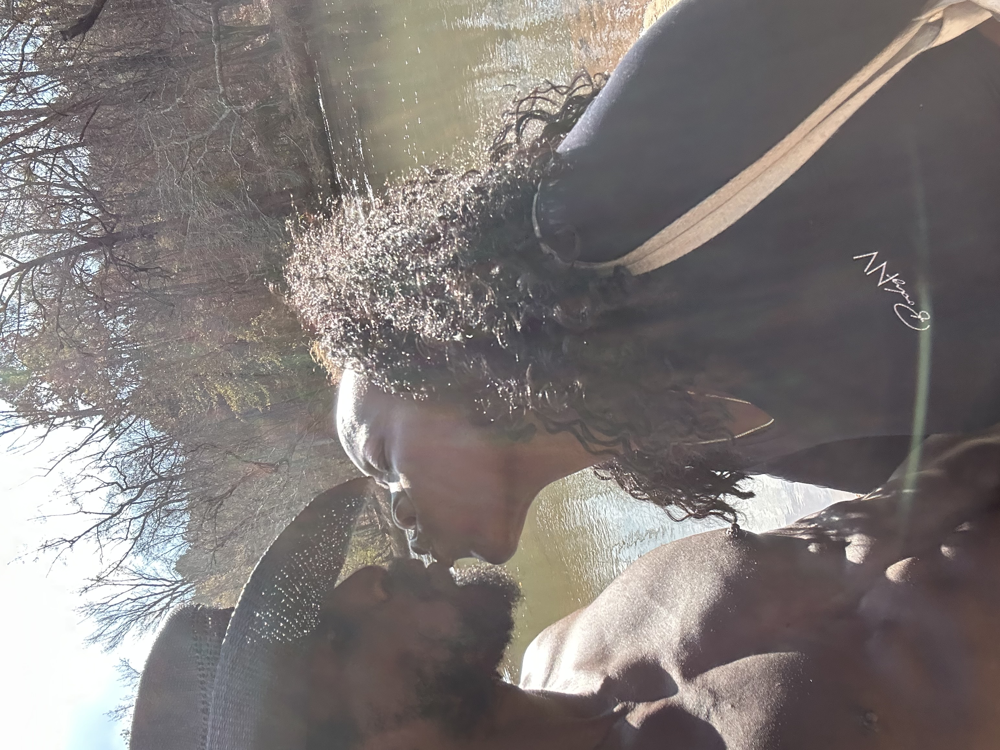
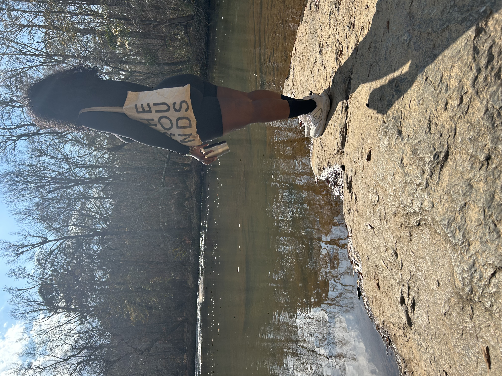
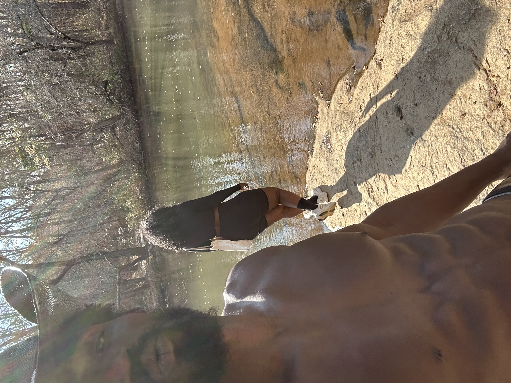
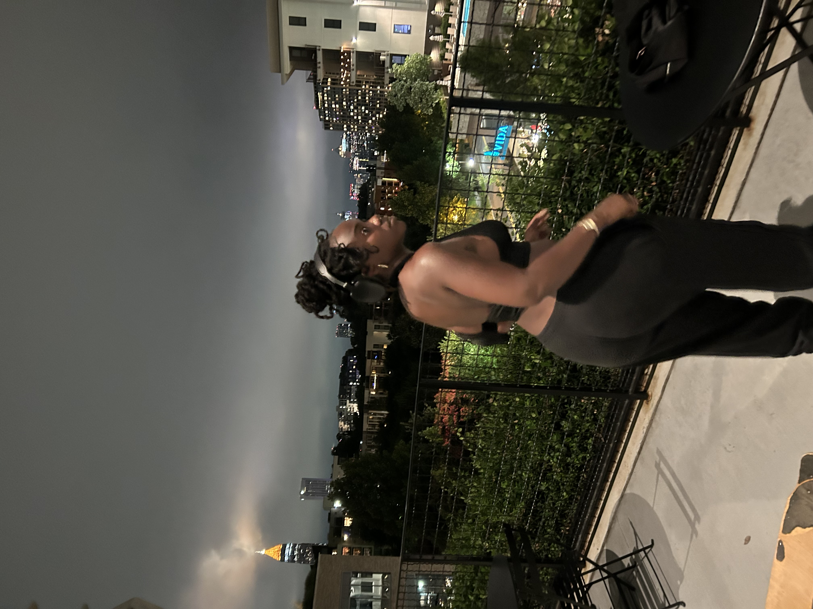

The day was warm, the sky was soft, and the Beltline felt like a movie set. I was gliding on my longboard, wheels humming, music in my head, just another ride.
And then I saw you—kneeling to lace up your roller skates. The noise of the city faded. The world didn’t just slow down, it stopped.
In that moment, it felt like the universe tapped me on the shoulder and said, “Look. Remember this.”
You stood up and started rolling, and I swear, you didn’t just move—you floated. The sun caught your face, your hair, your smile, and something in my chest shifted.
I didn’t know your name. I didn’t know your story. But I knew I was looking at the most beautiful person I had ever seen.
We passed each other like two comets in the same sky—close enough to feel, too far to hold on.
When we went our separate ways that day, I honestly thought I’d never see you again.
You became a memory I carried quietly— the girl on skates on the Beltline who stopped time for a second.
Life kept moving. I kept moving. But every now and then, my mind would drift back to you, and I’d wonder who you were, where you were, if I’d imagined it.
Then one day, I met you again—different place, different moment, same soul. I didn’t recognize you as the girl from the Beltline. I just knew my heart was doing that same thing again— that quiet, stunned, “oh no, I’m falling” feeling.
I fell in love with you for the second time, without knowing you were the same girl I’d fallen for the first time.
That has never happened to me before. And now, every time I see you, I fall in love with you all over again.